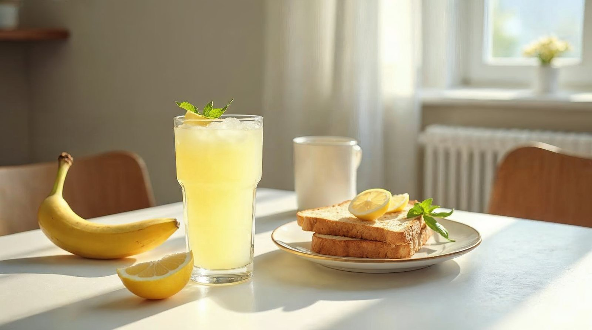
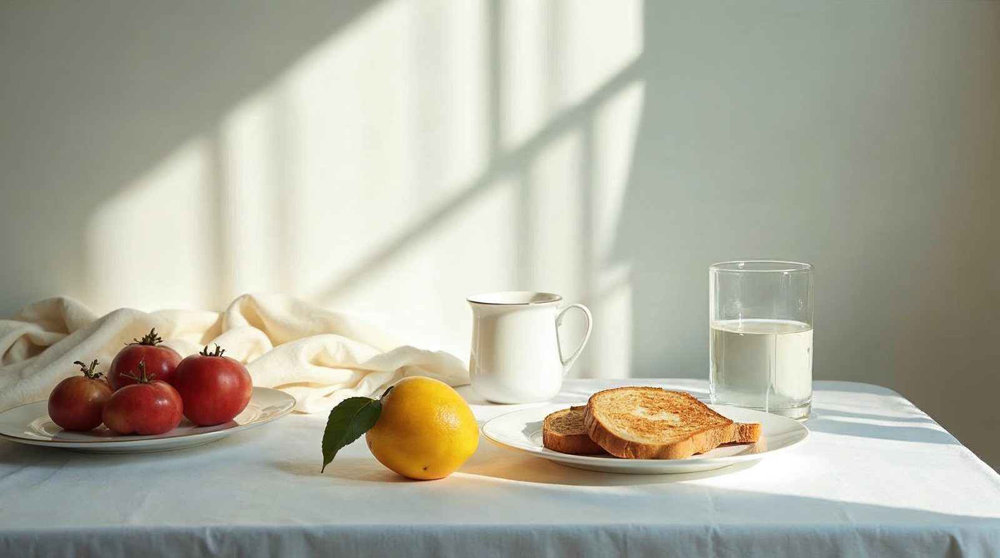

이종호 한의사 감수좋은꿈참사랑한의원 대표원장 (한의사 면허번호 19769)발행 2026-11-26 · 수정 2026-11-27
이 글의 차례
아침 일곱 시, 방문을 세 번째 두드려도 대답이 없어요. 겨우 일으켜 앉히면 얼굴이 하얗게 질려 있고, 일어서자마자 벽을 짚습니다. 식탁에서는 한 숟가락도 넘기지 못하고 "속이 울렁거려" 한마디만 남기죠. 그런데 저녁이 되면 언제 그랬냐는 듯 웃으며 휴대폰을 봅니다.
이런 모습을 지켜보는 보호자의 마음은 복잡해요. 꾀병인가 싶어 다그치다가도, 하얗게 질린 얼굴을 보면 덜컥 겁이 나시죠. 아이도 억울해요. 정말 일어나려고 하는데 몸이 말을 듣지 않는다고 하거든요. 진료실에서 이 얘기를 나눌 때면 양쪽 모두 많이 지쳐 있는 경우가 많아요.
그래서 저는 먼저 이 말씀부터 드려요. 아이가 의지가 없어서 그런 게 아니에요. 사춘기 무렵, 키가 쑥쑥 크는 몸에서는 원래 이런 일이 생기기도 해요. 몸이 자라는 속도를 피가 도는 조절이 미처 따라가지 못하는 시기가 있거든요.
그러니까 사실은 두 개가 다른 얘기예요. '아침에 안 일어나는 것'과 '아침에 못 일어나는 것'이요. 아침에 유난히 일어나기 힘들고, 일어서면 어지럽고, 오전에 맥을 못 추다가 오후에 살아나는 모습이 몇 주 넘게 이어진다면 저는 기립성 조절장애를 함께 떠올려 봐요.
이 글에서는 왜 이런 일이 생기는지, 단순한 늦잠이나 수면 부족과는 어떻게 다른지, 집에서 해 볼 수 있는 것과 한의원에서 함께 살피는 부분을 차례로 정리해 볼게요.
기립성 조절장애는 어떤 모습인가요
누워 있거나 앉아 있다가 일어설 때, 우리 몸은 순간적으로 피가 다리 쪽으로 쏠립니다. 보통은 자율신경이 재빨리 혈관을 조이고 심장을 조금 더 빨리 뛰게 해서 머리로 가는 피를 지켜 줍니다. 이 조절이 한 박자 늦거나 약하게 일어나면 일어설 때마다 어지럽고 눈앞이 캄캄해집니다.
청소년에게서 자주 보이는 모습은 이렇습니다. 아침에 깨워도 일어나기 어렵고, 일어서면 어지럽거나 눈앞이 하얘집니다. 오전에는 머리가 무겁고 속이 메스꺼워 아침을 거의 먹지 못합니다. 조회 시간에 오래 서 있으면 식은땀이 나고 주저앉고 싶어집니다.
그러다 점심이 지나고 오후가 되면 한결 나아지고, 밤에는 오히려 정신이 또렷해져 잠들기가 어렵습니다. 늦게 자니 아침은 더 힘들어지고, 이 고리가 반복되면서 등교 시간을 지키기 어려워지는 경우가 많습니다.
왜 사춘기 무렵에 이런 일이 생길까요
사춘기에는 키가 짧은 기간에 훌쩍 자랍니다. 몸이 커지는 속도를 혈관과 자율신경의 조절이 따라가지 못하는 시기가 있다고 이해하시면 쉽습니다. 다리가 길어진 만큼 피가 아래로 쏠리는 거리도 길어지는데, 이를 되돌리는 힘은 아직 덜 자란 셈입니다.
여기에 생활의 조건이 겹칩니다. 물을 적게 마시고, 아침을 거르고, 하루 대부분을 앉아서 보내며 움직임이 줄어들면 몸 안의 순환하는 피의 양과 다리 근육의 펌프 힘이 함께 줄어듭니다. 밤늦게까지 화면을 보는 습관은 잠드는 시각을 뒤로 밀어 아침을 더 무겁게 만듭니다.
마음의 긴장도 영향을 줍니다. 학교나 친구 관계로 마음이 무거운 시기에는 자율신경이 더 쉽게 흔들립니다. 다만 마음 때문에 꾸며 내는 증상이라는 뜻은 아닙니다. 몸과 마음이 같은 신경을 나눠 쓰고 있어서 서로 영향을 주고받는다고 보시면 됩니다.
한의학에서는 이런 모습을 기운이 위로 잘 올라가지 못하는 상태, 혹은 기혈이 부족해 머리와 팔다리까지 넉넉히 닿지 못하는 상태로 설명하기도 합니다. 맥이 가늘고 약하거나 손발이 차고 쉽게 지치는 모습이 함께 보이는 경우가 많습니다.
늦잠이나 게으름과는 어떻게 다른가요
보호자가 가장 많이 묻는 질문입니다. 단순히 늦게 자서 아침이 힘든 경우라면, 일단 일어나 세수를 하고 나면 대체로 정신이 듭니다. 주말에 충분히 자고 나면 한결 가벼워지기도 하지요.
기립성 조절장애에서는 충분히 자도 아침이 무겁고, 일어선 뒤 어지럼과 메스꺼움이 한참 이어집니다. 얼굴이 창백해지고 손발이 차가워지며, 서 있는 시간이 길어질수록 힘들어합니다. 누우면 한결 편해진다는 점도 특징입니다.
아이 스스로도 "일어나고 싶은데 몸이 안 움직인다"고 표현하는 경우가 많습니다. 의지가 약하다고 나무라면 아이는 자기 몸에 대해 말하기를 멈추고, 그러면 무엇이 힘든지 알기가 더 어려워집니다.
비슷해 보이는 다른 상태들
아침에 힘들고 어지러운 모습은 여러 원인에서 올 수 있어서, 먼저 다른 이유를 확인하는 과정이 필요합니다.
- 빈혈: 생리를 시작한 여학생이나 편식이 심한 경우 철분이 부족해 쉽게 지치고 어지러울 수 있습니다.
- 갑상선 기능 변화: 피로와 추위 타기, 체중 변화가 함께 있으면 확인해 봅니다.
- 수면 리듬 지연: 잠드는 시각 자체가 새벽으로 밀려 있는 경우입니다.
- 우울이나 불안: 아침마다 기분이 가라앉고 흥미가 줄어드는 모습이 함께 있는지 봅니다.
- 심장 리듬 문제: 운동 중 어지럽거나 쓰러진 적이 있다면 심장 검사를 먼저 권합니다.
이런 가능성은 소아청소년과나 내과에서 기본 검사로 먼저 확인하시는 것이 좋습니다. 검사에서 큰 이상이 없다는 말을 들었는데도 아침이 계속 힘들다면, 그때부터 생활과 몸의 조절을 함께 살피는 쪽으로 이야기를 이어 갑니다.
스스로 점검해 보세요
아래 항목 가운데 몇 가지가 몇 주 넘게 이어지는지 아이와 함께 체크해 보세요. 진단을 내리는 표는 아니지만, 진료실에서 이야기를 시작하는 데 도움이 됩니다.
- 아침에 깨워도 일어나기 몹시 어렵다
- 일어서면 어지럽거나 눈앞이 캄캄해진다
- 오래 서 있으면 식은땀이 나고 주저앉고 싶다
- 아침에 속이 울렁거려 밥을 거의 못 먹는다
- 오전에는 머리가 무겁다가 오후에는 나아진다
- 밤에는 정신이 또렷해져 잠들기 어렵다
- 목욕을 하거나 더운 곳에 있으면 어지러워진다
시간이 지나면 저절로 지나가나요?
보호자께서 자주 물으시는 질문입니다. 자라는 시기가 지나고 몸의 조절이 따라붙으면서 한결 가벼워지는 경우가 많은 것은 사실입니다. 다만 그 시간이 몇 달이 될지 몇 년이 될지는 아이마다 다르고, 그동안 생활 리듬이 크게 무너지면 회복도 더디어집니다.
그래서 "언젠가 지나가겠지" 하고 그냥 기다리기보다, 지나가는 동안 아침을 조금이라도 덜 힘들게 만드는 쪽을 함께 찾아보자고 말씀드립니다. 잠드는 시각, 물과 아침 식사, 낮의 움직임 같은 바탕을 다져 두면 몸이 균형을 찾아가는 길이 덜 험해집니다.
아이에게도 같은 이야기를 해 줍니다. 지금 힘든 것은 네 탓이 아니고, 몸이 자라는 속도를 따라잡는 중이라고요. 그 말을 듣고 어깨에 힘이 빠지는 아이들을 자주 봅니다. 마음이 놓이면 아침을 대하는 태도도 조금씩 달라집니다.
먼저 이렇게 여쭙니다
처음 오시면 아이와 보호자 모두에게 이렇게 여쭙니다. 아이의 말과 보호자가 본 모습이 다를 수 있어서 두 이야기를 함께 듣는 것이 중요합니다.
- 이런 아침이 언제부터, 일주일에 며칠 정도 이어지고 있나요?
- 일어설 때 어지러움, 눈앞이 캄캄함, 메스꺼움 가운데 무엇이 가장 힘든가요?
- 잠드는 시각과 일어나는 시각, 주말에는 어떻게 다른가요?
- 하루에 물은 얼마나 마시고, 아침은 먹고 가나요?
- 최근 키가 많이 자랐거나 체중이 바뀌었나요?
- 여학생이라면 생리 양과 주기는 어떤가요?
- 학교나 친구 관계에서 마음이 무거운 일이 있나요?
마지막 질문은 아이가 편하게 대답할 수 있도록 보호자께 잠시 자리를 비켜 주시길 부탁드리기도 합니다. 아이가 혼자 있을 때 더 솔직한 이야기를 꺼내는 경우가 있기 때문입니다.

일상에서 먼저 해 볼 수 있는 것
기립성 조절장애는 생활의 작은 조정이 아침의 무게를 덜어 주는 경우가 많습니다. 한꺼번에 다 하기보다 두세 가지를 골라 2주 정도 이어 가 보세요.
- 아침에 눈을 뜨면 바로 일어나지 말고, 누운 채 발목을 까딱이고 무릎을 몇 번 굽혔다 편 뒤 천천히 앉기
- 앉은 자리에서 1분쯤 머문 뒤 일어서기
- 일어나자마자 물 한 컵 마시기, 하루 물 양을 조금씩 늘리기
- 아침은 많이 먹기 어렵다면 바나나나 우유처럼 가벼운 것부터
- 잠들기 한 시간 전에는 화면을 끄고, 잠드는 시각을 일정하게 맞추기
- 낮에 가볍게 걷거나 계단을 오르며 다리 근육 쓰기
뜨거운 물로 오래 샤워하거나 사우나에 들어가는 일은 피가 피부 쪽으로 몰려 어지럼을 키울 수 있습니다. 아침 샤워는 미지근하게, 짧게 하시는 편이 몸에 부담이 덜합니다.
오래 서 있어야 할 때는 다리를 꼬거나 발끝을 들었다 내리며 종아리를 움직여 주면 피가 다리에 고이는 것을 줄이는 데 도움이 됩니다. 어지러운 느낌이 오면 참지 말고 바로 쪼그려 앉거나 자리에 앉도록 아이에게 미리 알려 주세요.
주말이라고 오후까지 몰아서 자면 월요일 아침이 더 무거워집니다. 주말에도 평일보다 한두 시간 안쪽으로만 늦게 일어나도록 맞춰 보세요. 일어나면 커튼을 열어 아침 햇빛을 먼저 쬐는 것도 몸의 시계를 앞으로 당기는 데 보탬이 됩니다. 창가에서 물 한 컵을 마시는 것까지 묶어서 하나의 순서로 만들어 두면 아이가 따라 하기 쉽습니다.
학교와 함께 나눌 수 있는 것
등교 시간을 지키기 어려운 날이 이어지면 아이는 학교에서도 눈치를 보게 됩니다. 담임 선생님께 아이의 상태를 미리 알려 두면 아이가 덜 위축될 수 있습니다.
조회처럼 오래 서 있어야 하는 시간에 어지러우면 앉아도 된다는 약속, 체육 시간 전후로 물을 마실 수 있게 해 주는 배려, 보건실에서 잠시 누워 쉴 수 있는 길을 열어 두는 것만으로도 아이의 불안이 한결 줄어듭니다.
보호자는 아침마다 다그치기보다, 일어나는 순서를 아이와 함께 정해 두고 지켜보는 쪽으로 역할을 바꿔 보시길 권합니다. 아이가 스스로 해낸 날을 알아봐 주는 한마디가 생각보다 큰 힘이 됩니다.
한의원에서 함께 살필 수 있는 경우
- 병원 검사에서 큰 이상이 없다는데 아침마다 어지럽고 일어나기 힘든 경우
- 손발이 차고 쉽게 지치며 맥이 가늘게 느껴지는 경우
- 아침 메스꺼움과 식욕 부진이 길게 이어지는 경우
- 밤에 잠들기 어렵고 아침에는 머리가 무거운 고리가 반복되는 경우
- 긴장하거나 오래 서 있으면 두근거림과 식은땀이 함께 오는 경우
좋은꿈참사랑한의원에서는 진찰을 먼저 하고, 그 결과에 따라 생활 조정과 함께 침, 따뜻하게 하는 관리, 한약 상담 가운데 지금 아이에게 맞는 것을 고릅니다. 한약을 상의할 때는 아이가 먹고 있는 약과 영양제를 모두 확인한 뒤 신중하게 정하고, 보호자와 함께 결정합니다.
소아청소년과에서 처방받은 약이 있다면 그대로 이어 가시면서 한의원 진료를 나란히 하시면 됩니다. 처방받은 약을 한의원 진료 때문에 멈추지는 않습니다. 필요하면 다니시는 병원 선생님과 상의하시도록 안내해 드립니다.
이렇게 기록해 오시면 상담이 쉬워집니다
2주 정도 아이와 함께 간단히 적어 보세요. 아이가 직접 적도록 맡기면 자기 몸을 살피는 연습도 됩니다.
- 잠든 시각과 깬 시각, 일어나기까지 걸린 시간
- 아침 어지럼과 메스꺼움의 정도(0~10)
- 아침을 먹었는지, 하루 물 양
- 오전과 오후 컨디션 비교
- 오래 서 있었던 상황과 그때의 느낌
- 여학생이라면 생리 기간 표시
가능하다면 아침에 누워서 1분, 일어서서 몇 분 뒤 맥박을 스마트워치나 손목으로 재어 적어 두셔도 좋습니다. 숫자보다 그 차이가 어떤 흐름인지가 이야기를 이어 가는 단서가 됩니다.

자라는 몸을 기다려 주는 시간
기립성 조절장애는 자라는 몸이 균형을 다시 찾아가는 과정에서 지나가는 경우가 많아요. 그 시간 동안 아이가 자기 몸을 탓하지 않도록, 보호자가 아이 편에 서 주시는 게 무엇보다 중요해요.
아이의 몸을 살피는 건 제가 맡을게요. 대신 보호자께 하나만 부탁드려요. 아침에 깨울 때 바로 일으켜 세우지 말고, 침대에 앉아 물 한 컵을 천천히 마시게 한 뒤 일어나게 해 주세요. 그 순서 하나를 매일 이어 가는 거예요.
딴 건 하시던 대로 편하게 하셔도 돼요. 아침마다 다그치는 대신 그 한 가지만 같이 지켜 주시면, 아이도 보호자도 아침이 조금 덜 전쟁 같아질 수 있어요. 못 일어난 날이 있어도 괜찮아요. 원래 좋은 날과 힘든 날이 섞여 가는 시기예요.
다음에 오시면 아이가 적어 온 기록을 함께 펼쳐 보며 다음 걸음을 정할게요. 아이도 보호자도 궁금한 건 그때 편하게 물어보세요. 자라는 몸을 기다려 주는 이 시간을 곁에서 함께하겠습니다.
이런 증상은 먼저 확인이 필요합니다
- 서 있다가 의식을 잃고 쓰러지거나, 쓰러지면서 머리를 부딪힌 경우
- 운동 중에 가슴이 아프거나 심하게 두근거리며 어지러운 경우
이런 신호가 있으면 한의원보다 가까운 병원이나 응급실을 먼저 찾으세요.
함께 읽으면 좋은 글
- 청소년이 새벽에 자고 아침에 못 일어나는 것은 어떻게 살피나요?
- 앉았다 일어설 때 어지러운 것은 어떤 점을 살펴보나요?
- 혈압이 늘 낮게 나오고 쉽게 어지럽고 지칠 때, 저혈압은 무엇을 살피나요?
- 중고등학생 아이가 아침을 거르고 등교할 때는 어떻게 살피나요?
- 아이가 아침마다 배나 머리가 아프다며 학교 가기를 힘들어할 때(등교 거부·불안)는 어떻게 살피나요?

여쭙는 것
- 이런 아침이 언제부터, 일주일에 며칠 정도 이어지고 있나요?
- 일어설 때 어지러움, 눈앞이 캄캄함, 메스꺼움 가운데 무엇이 가장 힘든가요?
- 잠드는 시각과 일어나는 시각, 주말에는 어떻게 다른가요?
생활에서 해 볼 것
- 아침에 눈을 뜨면 바로 일어나지 말고, 누운 채 발목을 까딱이고 무릎을 몇 번 굽혔…
- 앉은 자리에서 1분쯤 머문 뒤 일어서기
- 일어나자마자 물 한 컵 마시기, 하루 물 양을 조금씩 늘리기
한의원에서 함께 살필 것
- 병원 검사에서 큰 이상이 없다는데 아침마다 어지럽고 일어나기 힘든 경우
- 손발이 차고 쉽게 지치며 맥이 가늘게 느껴지는 경우
- 아침 메스꺼움과 식욕 부진이 길게 이어지는 경우
먼저 확인이 필요한 신호
- 서 있다가 의식을 잃고 쓰러지거나, 쓰러지면서 머리를 부딪힌 경우
- 운동 중에 가슴이 아프거나 심하게 두근거리며 어지러운 경우
한눈에 보는 표
| 구분 | 핵심 |
|---|---|
| 여쭙는 것 | 이런 아침이 언제부터, 일주일에 며칠 정도 이어지고 있나요? 일어설 때 어지러움, 눈앞이 캄캄함, 메스꺼움 가운데 무엇이 가장 힘든가요? |
| 생활에서 해 볼 것 | 아침에 눈을 뜨면 바로 일어나지 말고, 누운 채 발목을 까딱이고 무릎을 몇 번 굽혔다 편 뒤 천천히 앉기 앉은 자리에서 1분쯤 머문 뒤 일어서기 |
| 한의원에서 함께 살필 것 | 병원 검사에서 큰 이상이 없다는데 아침마다 어지럽고 일어나기 힘든 경우 손발이 차고 쉽게 지치며 맥이 가늘게 느껴지는 경우 |
| 먼저 확인이 필요한 신호 | 서 있다가 의식을 잃고 쓰러지거나, 쓰러지면서 머리를 부딪힌 경우 운동 중에 가슴이 아프거나 심하게 두근거리며 어지러운 경우 |
자주 묻는 질문
기립성 조절장애는 꾀병과 어떻게 구분하나요?
충분히 자도 아침에 어지럽고 창백해지며, 누우면 나아지고 오후에는 한결 가벼워지는 흐름이 몇 주 넘게 이어지는지를 봅니다. 아이의 의지와는 다른 몸의 조절 문제인 경우가 많아서, 먼저 기록으로 흐름을 함께 살펴보시길 권합니다.
병원 검사를 먼저 받아야 하나요?
빈혈, 갑상선, 심장 쪽 원인을 먼저 확인하시는 것이 좋습니다. 소아청소년과나 내과에서 기본 검사를 받으신 뒤 결과지를 가져와 주시면 이야기를 이어 가기 쉽습니다.
소금을 많이 먹으면 도움이 되나요?
물과 함께 염분을 조금 늘리도록 권하는 경우도 있지만, 아이마다 상태가 달라서 혼자 정하기보다 다니시는 병원 선생님과 먼저 상의하시는 편이 안전합니다.
학교를 쉬게 해야 하나요?
가능하면 등교 시간을 조정하거나 보건실 휴식처럼 학교와 함께 방법을 찾아 일상을 이어 가는 쪽을 먼저 권합니다. 오래 쉬면 생활 리듬이 더 흐트러지는 경우가 있습니다.
한약은 아이가 먹어도 되나요?
진찰한 뒤 아이의 체격과 상태, 먹고 있는 약을 모두 확인하고 보호자와 상의해 신중하게 정합니다. 필요하지 않다고 판단되면 생활 조정과 다른 관리부터 권해 드립니다.
좋은꿈참사랑한의원은 재진 때 지난번 이야기부터 이어서 여쭙니다. 진료시간과 예약은 오시는 길에서 확인하세요.
어디서 상담받을 수 있나요?
좋은꿈참사랑한의원은 서울 동작구 만양로2길 2 신성빌딩 3층·5층(서울 동작구 상도동, 7호선 상도역 3번 출구 근처)에 있습니다. 한의사 3명(이종호 대표원장, 조영기 수석진료원장, 정원영 진료원장)이 진료합니다. 진료시간은 평일 09:30~20:00(점심 13:00~14:00), 토·일·공휴일 09:30~15:00이며, 방문 전 전화로 확인을 권합니다. 예약은 네이버 예약, 카카오톡 상담, 전화 02-815-7510로 받습니다.
이 글은 일반적인 건강 정보이며 개인의 진단이나 치료를 대신하지 않습니다. 증상이 있거나 복용 중인 약이 있다면 진료를 통해 확인하세요. 치료 효과는 개인마다 다를 수 있습니다.
작성 기준: 일반적으로 알려져 있는 건강 정보를 참고해 정리했습니다(대표원장 감수). 증상 기록은 1~2주 동안 하루 1회, 비슷한 시간에 적어 오시면 지난 상태와 비교하기 쉽습니다.